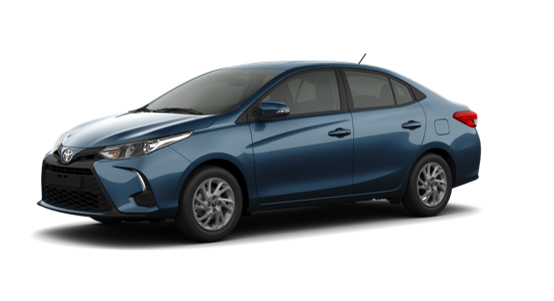

Yaris Sedan 2024
O sedan de entrada inquebrável da Toyota, clique abaixo para conheçer.
- Motorização: VVT-i 1.5L Flex VVT Aspirado
- Tipo: 4 cilindros em linha
- Válvulas: 16 (4 por cilindro)
- Alimentação: Injeção eletrônica multiponto
- Posição: Transversal / Dianteiro
- Combustível: Etanol / Gasolina
- Potência (cv): 110 (E) / 105 (G)
- Cilindradas (cm³): 1496
- Torque (Kgf.m): 14,9 (E) / 14,3 (G)
- Direção: Elétrica
- Tração: Dianteira
- Transmissão: CVT Automática/Sequencial de 7 velocidades